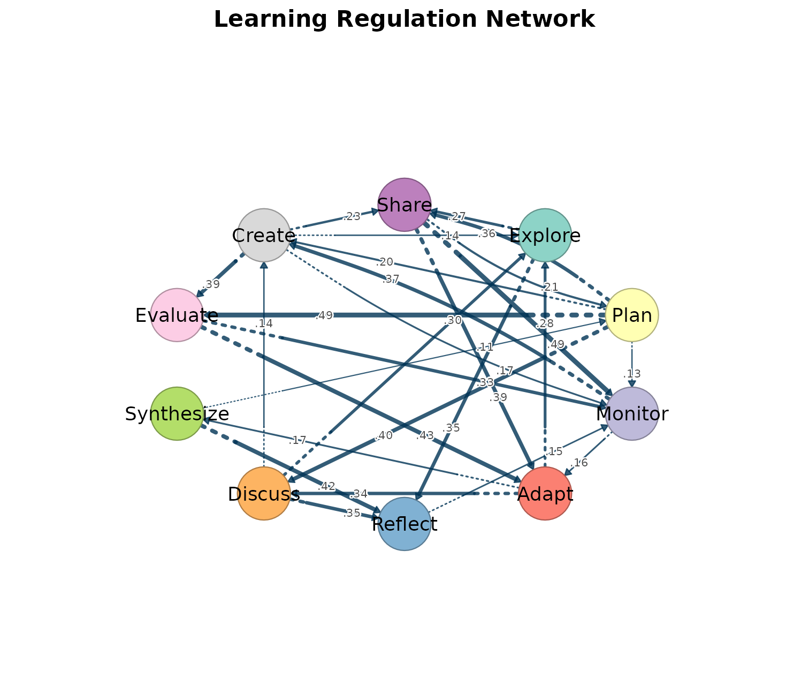
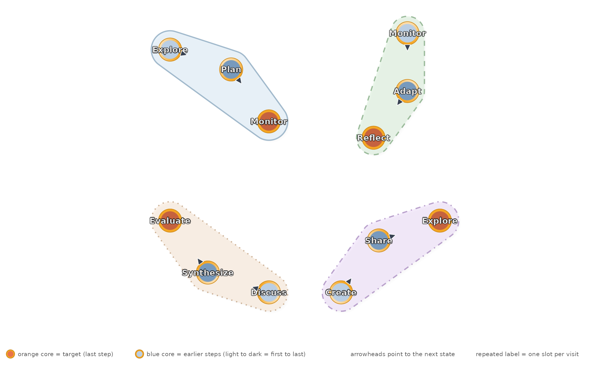

Why cograph
R has several network packages — igraph for graph algorithms, qgraph for psychometric networks, tidygraph for dplyr-style manipulation. Each does one thing well but forces you into its own data format and API. Going from a raw matrix to a filtered, annotated, publication-ready figure typically means loading three packages, converting between formats, and writing boilerplate code to stitch the results together.
cograph was designed to eliminate that friction. Every function —
plotting, centrality, community detection, filtering — accepts any major
network format directly: matrices, edge lists, igraph, statnet, qgraph,
and tna objects. No manual conversion. Centrality returns a tidy data
frame, not a list of separate calls. Community detection is one function
with 11 algorithms behind it. Statistical annotations (confidence
intervals, p-values, significance stars) render directly on the figure.
And when you need igraph or statnet for something cograph does not do,
to_igraph() and to_network() convert back
without data loss.
Beyond standard network analysis, cograph visualizes higher-order sequential pathways as simplicial blob diagrams, renders bootstrap stability results with forest plots (linear, circular, and grouped layouts), and performs motif analysis that identifies specific named node triples — not just abstract type counts.
The result is a single package that covers the full workflow from data import to publication-ready output, while remaining interoperable with the rest of the R network ecosystem.
set.seed(42)
n <- 10
states <- c("Explore", "Plan", "Monitor", "Adapt", "Reflect",
"Discuss", "Synthesize", "Evaluate", "Create", "Share")
mat <- matrix(0, n, n, dimnames = list(states, states))
# Sparse: ~30% of edges populated
edges <- sample(which(row(mat) != col(mat)), 30)
mat[edges] <- round(runif(30, 0.05, 0.5), 2)Plotting
splot() is the main plotting function. One call,
publication-ready output.
splot(mat, tna_styling = TRUE, minimum = 0.1,
title = "Learning Regulation Network")
Key parameters: layout, minimum,
node_fill, node_size,
edge_labels, curvature,
scale_nodes_by, theme,
tna_styling.
splot(mat, layout = "spring")
splot(mat, minimum = 0.1, edge_labels = TRUE)
splot(mat, scale_nodes_by = "betweenness")
splot(mat, theme = "dark")
splot(mat, tna_styling = TRUE)Layouts: "oval", "spring",
"circle", "grid", "mds",
"star", "bipartite", "groups", or
a custom coordinate matrix.
Themes: "default", "dark",
"minimal", "gray", "nature",
"colorblind", "viridis".
Node shapes: "circle", "square",
"triangle", "diamond",
"pentagon", "hexagon", "star",
"heart", "ellipse", "cross",
"rectangle", "pie", "donut", or
custom SVG via register_svg_shape().
Specialized plots
| Function | Purpose |
|---|---|
splot() |
Network graph (base R) |
soplot() |
Grid/ggplot2 network |
plot_tna() / tplot()
|
TNA-style wrappers with qgraph-compatible parameters |
plot_chord() |
Chord diagram (directed/undirected ribbons) |
plot_heatmap() |
Adjacency heatmap with clustering |
plot_ml_heatmap() |
Multi-layer comparison heatmap |
plot_transitions() / plot_alluvial()
|
Alluvial / Sankey flow diagrams |
plot_trajectories() |
Individual trajectory tracking |
plot_compare() |
Difference network between two matrices |
plot_comparison_heatmap() |
Side-by-side heatmap comparison |
plot_mixed_network() |
Directed + undirected edges combined |
plot_bootstrap_forest() |
Bootstrap CI forest plots (linear, circular, grouped) |
plot_edge_diff_forest() |
Edge difference plots (linear, circular, chord, tile) |
plot_simplicial() |
Higher-order pathway blob overlays |
overlay_communities() |
Community blob overlays on network |
plot_mcml() |
Two-layer hierarchical cluster visualization |
plot_mtna() |
Flat multi-cluster layout |
plot_mlna() |
Stacked multilayer 3D perspective |
plot_htna() |
Multi-group heterogeneous TNA layout |
plot_robustness() |
Robustness degradation curves |
plot_permutation() /
plot_group_permutation()
|
Permutation test results |
plot_simplicial(mat,
c("Explore Plan -> Monitor",
"Monitor Adapt -> Reflect",
"Discuss Synthesize -> Evaluate",
"Create Share -> Explore"),
dismantled = TRUE, ncol = 2,
title = "Higher-Order Pathways")
Input formats
Every function accepts six formats directly.
| Format | Example |
|---|---|
| Matrix | splot(mat) |
| Edge list | splot(data.frame(from = "A", to = "B", weight = 1)) |
| igraph | splot(igraph::make_ring(5)) |
| statnet | splot(network::network(mat)) |
| qgraph | from_qgraph(q) |
| tna | splot(tna::tna(data)) |
Conversion utilities:
| Function | Output |
|---|---|
as_cograph(x) |
cograph_network object |
to_igraph(x) |
igraph object |
to_matrix(x) |
Adjacency matrix |
to_data_frame(x) / to_df(x)
|
Edge list data frame |
to_network(x) |
statnet network object |
from_qgraph(q) |
Extract qgraph styles into cograph |
Filtering and selection
Filter edges and nodes with expressions. Centrality measures are
lazy-computed inside filter_nodes().
strong <- filter_edges(mat, weight > 0.3)
get_edges(strong)
#> from to weight
#> 1 8 3 0.33
#> 2 10 3 0.49
#> 3 8 4 0.43
#> 4 10 4 0.39
#> 5 1 5 0.35
#> 6 6 5 0.35
#> 7 7 5 0.42
#> 8 2 6 0.40
#> 9 4 6 0.34
#> 10 2 8 0.49
#> 11 9 8 0.39
#> 12 3 9 0.37
#> 13 2 10 0.36
top3 <- select_nodes(mat, top = 3, by = "betweenness")
get_labels(top3)
#> [1] "Plan" "Monitor" "Adapt"| Function | Purpose |
|---|---|
filter_edges(x, ...) |
Filter by weight, from, to |
filter_nodes(x, ...) |
Filter by degree, centrality, label |
select_nodes(x, ...) |
Top-N by centrality, by name, neighbors |
select_edges(x, ...) |
Top-N, involving, between, bridges, mutual |
select_neighbors(x, of) |
Ego-network extraction (multi-hop) |
select_component(x) |
Largest or named component |
select_top(x, n, by) |
Top-N nodes by any centrality |
select_bridges(x) |
Bridge edges only |
select_top_edges(x, n) |
Top-N edges by weight |
select_edges_involving(x, nodes) |
Edges touching specific nodes |
select_edges_between(x, s1, s2) |
Edges between two node sets |
subset_nodes(x, ...) /
subset_edges(x, ...)
|
Base R-style subsetting |
simplify(x) |
Remove multi-edges and self-loops |
Getters and setters:
| Function | Purpose |
|---|---|
get_nodes(x) / set_nodes(x, df)
|
Node data frame |
get_edges(x) / set_edges(x, df)
|
Edge data frame |
get_labels(x) |
Node label vector |
n_nodes(x) / n_edges(x)
|
Counts |
is_directed(x) |
Directedness |
set_groups(x) / get_groups(x)
|
Group assignments |
set_layout(x, layout) |
Layout coordinates |
summarize_network(x) |
Network summary |
Centrality
centrality() computes up to 25 measures and returns a
data frame.
centrality(mat, measures = c("degree", "betweenness", "pagerank"))
#> node degree_all betweenness pagerank
#> 1 Explore 6 5.0 0.11846147
#> 2 Plan 7 15.5 0.03640953
#> 3 Monitor 8 18.0 0.18376724
#> 4 Adapt 6 15.0 0.12356096
#> 5 Reflect 6 10.0 0.12513119
#> 6 Discuss 5 0.5 0.06803638
#> 7 Synthesize 4 6.5 0.03760071
#> 8 Evaluate 5 3.0 0.07386400
#> 9 Create 7 13.0 0.13821279
#> 10 Share 6 9.0 0.09495573Individual functions return named vectors:
centrality_degree(mat)
#> Explore Plan Monitor Adapt Reflect Discuss Synthesize
#> 6 7 8 6 6 5 4
#> Evaluate Create Share
#> 5 7 6
centrality_pagerank(mat)
#> Explore Plan Monitor Adapt Reflect Discuss Synthesize
#> 0.11846147 0.03640953 0.18376724 0.12356096 0.12513119 0.06803638 0.03760071
#> Evaluate Create Share
#> 0.07386400 0.13821279 0.09495573All 25 measures:
Edge centrality: edge_centrality(),
edge_betweenness().
Network properties
network_summary() computes up to 37 network-level
metrics.
network_summary(mat)
#> node_count edge_count density component_count diameter mean_distance min_cut
#> 1 10 30 0.333 1 0.97 0.435 1
#> centralization_degree centralization_in_degree centralization_out_degree
#> 1 0.123 0.333 0.222
#> centralization_betweenness centralization_closeness centralization_eigen
#> 1 0.149 0.238 0.479
#> transitivity reciprocity assortativity_degree hub_score authority_score
#> 1 0.423 0.111 -0.116 NA NA| Function | Purpose |
|---|---|
network_summary() |
37 metrics (density, diameter, clustering, etc.) |
network_small_world() |
Small-world coefficient |
network_rich_club() |
Rich-club coefficient |
network_global_efficiency() |
Global efficiency |
network_local_efficiency() |
Local efficiency |
degree_distribution() |
Degree histogram |
network_girth() |
Shortest cycle |
network_radius() |
Minimum eccentricity |
network_bridges() |
Bridge edges |
network_cut_vertices() |
Articulation points |
network_vertex_connectivity() |
Minimum vertices to disconnect |
network_clique_size() |
Largest complete subgraph |
Community detection
11 algorithms with a consistent interface.
comms <- communities(mat, method = "walktrap")
comms
#> Community structure (walktrap)
#> Nodes: 10 | Communities: 2 | Modularity: 0.1976
#> Sizes: 5, 5
#>
#> node community
#> Explore 1
#> Plan 2
#> Monitor 2
#> Adapt 1
#> Reflect 1
#> Discuss 1
#> Synthesize 1
#> Evaluate 2
#> Create 2
#> Share 2
community_sizes(comms)
#> [1] 5 5| Function | Algorithm | Alias |
|---|---|---|
community_louvain() |
Louvain modularity | com_lv() |
community_leiden() |
Leiden (improved Louvain) | com_ld() |
community_fast_greedy() |
Fast greedy | com_fg() |
community_walktrap() |
Random walk | com_wt() |
community_infomap() |
Information flow | com_im() |
community_label_propagation() |
Label propagation | com_lp() |
community_edge_betweenness() |
Edge betweenness | com_eb() |
community_leading_eigenvector() |
Leading eigenvector | com_le() |
community_spinglass() |
Spin glass | com_sg() |
community_optimal() |
Exact optimization | com_op() |
community_fluid() |
Fluid communities | com_fl() |
Additional community functions:
| Function | Purpose |
|---|---|
community_consensus() |
Run algorithm N times, keep stable assignments |
compare_communities() |
Compare partitions (NMI, VI, Rand, adjusted Rand) |
modularity() |
Modularity score |
community_sizes() |
Size of each community |
color_communities() |
Color vector from community membership |
cluster_quality() |
Quality metrics (silhouette, Dunn index) |
cluster_significance() |
Permutation-based significance testing |
detect_communities() |
Alternative interface (returns data frame) |
Motifs
Motif analysis identifies recurring 3-node patterns using the MAN classification (16 directed triad types).
mot <- motifs(mat, significance = FALSE)
mot
#> Motif Census
#> Level: aggregate | States: 10 | Pattern: triangle
#>
#> Type distribution:
#>
#> 030C 030T 120C 120D 120U
#> 1 1 1 1 1
#>
#> Top 5 results:
#> type count
#> 030T 11
#> 120C 3
#> 030C 2
#> 120D 2
#> 120U 1| Function | Purpose |
|---|---|
motifs() |
MAN type census with significance testing |
subgraphs() |
Named node triples forming each pattern |
motif_census() |
Low-level triad census |
extract_motifs() |
Per-individual motif extraction |
extract_triads() |
Extract specific triad types |
triad_census() |
Raw 16-type triad count |
get_edge_list() |
Edge list from tna for motif input |
Plot types: plot(mot, type = "types"),
"significance", "triads",
"patterns".
Robustness
Simulate network degradation under targeted and random removal.
robustness(mat, type = "vertex", measure = "betweenness", n_iter = 100)
plot_robustness(x = mat, measures = c("betweenness", "degree", "random"))| Function | Purpose |
|---|---|
robustness() |
Simulate removal attacks (vertex or edge) |
plot_robustness() |
Plot robustness curves for multiple strategies |
robustness_summary() |
AUC and summary statistics |
robustness_auc() |
Area under the robustness curve |
Disparity filter
Backbone extraction using the disparity filter (Serrano et al. 2009).
disparity_filter(mat)
splot.tna_disparity(disparity_filter(mat))Multi-cluster visualization
clusters <- list(
Cognitive = c("Explore", "Plan", "Monitor", "Adapt", "Reflect"),
Social = c("Discuss", "Synthesize", "Share"),
Evaluative = c("Evaluate", "Create")
)
plot_mcml(mat, clusters, mode = "tna")
plot_mtna(mat, clusters)| Function | Architecture |
|---|---|
plot_mcml() |
Two-layer: detail nodes + summary pies |
plot_mtna() |
Flat cluster layout |
plot_mlna() |
Stacked 3D multilayer |
plot_htna() |
Multi-group heterogeneous TNA |
cluster_summary() / build_mcml()
|
Pre-compute cluster aggregation |
as_tna() / as_mcml()
|
Convert cluster summaries to tna objects |
cluster_network() |
Extract cluster-level network |
Multilayer networks
Construct and analyze supra-adjacency matrices for multilayer/multiplex networks.
| Function | Purpose |
|---|---|
mlna() / supra_adjacency()
|
Build supra-adjacency matrix |
supra_layer() / supra_interlayer()
|
Extract individual layers |
aggregate_layers() /
aggregate_weights()
|
Combine layers |
plot_mlna() |
3D perspective visualization |
plot_ml_heatmap() |
Multi-layer heatmap comparison |
Higher-order networks
Detect sequential dependencies beyond first-order Markov models. Requires the Nestimate package.
| Function | Purpose |
|---|---|
build_hon() |
Higher-Order Network construction |
build_hypa() |
Path anomaly detection (hypergeometric null) |
build_mogen() |
Multi-order model selection (AIC/BIC) |
path_counts() |
k-step path frequencies |
plot_simplicial() |
Visualize pathways as blob overlays |
build_simplicial() |
Simplicial complex from cliques |
persistent_homology() |
Topological persistence across thresholds |
q_analysis() |
Multi-level structural connectivity |
verify_simplicial() |
Cross-validate via Euler-Poincare theorem |
TNA integration
Direct support for all tna package objects:
| Object | What splot() does |
|---|---|
tna |
Network with donut rings, TNA styling |
group_tna |
Multi-panel grid per group |
tna_bootstrap |
Stability-styled edges |
tna_permutation |
Colored difference network |
group_tna_permutation |
Multi-panel permutation results |
tna_disparity |
Backbone filter visualization |
Palettes
| Function | Colors |
|---|---|
palette_viridis(n) |
Viridis scale |
palette_pastel(n) |
Soft pastel |
palette_blues(n) |
Blue gradient |
palette_reds(n) |
Red gradient |
palette_diverging(n) |
Blue-white-red |
palette_colorblind(n) |
Colorblind-safe |
palette_rainbow(n) |
Rainbow |
Pipe API
The sn_* functions provide a chainable builder for the
grid/ggplot2 rendering path.
mat |>
cograph() |>
sn_layout("spring") |>
sn_theme("minimal") |>
sn_nodes(size = 8, fill = "steelblue") |>
sn_edges(curvature = 0.2) |>
sn_render(title = "My Network")
mat |> cograph() |> sn_save("network.pdf")
p <- mat |> cograph() |> sn_ggplot()| Function | Purpose |
|---|---|
cograph() / as_cograph()
|
Create network object |
sn_nodes() |
Node aesthetics |
sn_edges() |
Edge aesthetics |
sn_layout() |
Layout algorithm |
sn_theme() |
Visual theme |
sn_palette() |
Color palette |
sn_render() |
Render to screen |
sn_save() / sn_save_ggplot()
|
Save to file |
sn_ggplot() |
Convert to ggplot2 object |
register_theme() / register_layout() /
register_shape()
|
Register custom themes, layouts, shapes |
Further reading
Package resources:
- cograph function reference — complete list of all functions with examples
- cograph pkgdown site — full documentation and articles
Blog posts:
- cograph: Complex Network Analysis and Visualization — overview of the package design and capabilities
- Human–AI Interaction: A TNA with cograph — worked example analyzing 13,002 turns of human–AI coding collaboration
References:
Saqr, M., López-Pernas, S., Conde, M. A., & Hernández-García, A. (2024). Social Network Analysis: A Primer, a Guide and a Tutorial in R. In Learning Analytics Methods and Tutorials. Springer. https://doi.org/10.1007/978-3-031-54464-4_15
Hernández-García, Á., Cuenca-Enrique, C., Traxler, A., López-Pernas, S., Conde-González, M. Á., & Saqr, M. (2024). Community detection in learning networks using R. In Learning Analytics Methods and Tutorials (pp. 519–540). Springer. https://doi.org/10.1007/978-3-031-54464-4_16
Saqr, M., López-Pernas, S., Törmänen, T., Kaliisa, R., Misiejuk, K., & Tikka, S. (2025). Transition Network Analysis: A Novel Framework for Modeling, Visualizing, and Identifying the Temporal Patterns of Learners and Learning Processes. In Proceedings of the 15th LAK Conference (pp. 351–361). ACM. https://doi.org/10.1145/3706468.3706513
Tikka, S., López-Pernas, S., & Saqr, M. (2025). tna: An R Package for Transition Network Analysis. Applied Psychological Measurement. https://doi.org/10.1177/01466216251348840